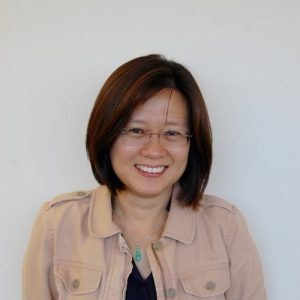

Abstract. Subjective data refers to data that contains opinions and experiences. Such data is ubiquitous in product reviews, tweets, and discussion forums in social media. Consumers today spend considerable time sifting through subjective data to make informed decisions about purchases. At Megagon Labs, we are building technologies to synthesize knowledge from subjective data and to facilitate searching over them. In this talk, I will describe how consumers can enjoy an enhanced search experience through a system that directly supports both subjective and objective search; by harnessing information "outside the box", in the text of online reviews or social media, managing the extractions as first-class citizens in a data management system, and answering subjective queries.
Speaker Bio. Wang-Chiew Tan leads the research efforts at Megagon Labs with the goal of building advanced technologies to enhance search by experience. Her team conducts research on data integration, information extraction, text mining and summarization, knowledge base construction and commonsense reasoning, and data visualization. Prior to that, she was a Professor of Computer Science at University of California, Santa Cruz. She also spent two years at IBM Research - Almaden. She received her B.Sc. (First Class) in Computer Science from the National University of Singapore and her Ph.D. in Computer Science from the University of Pennsylvania. Her research interests include data integration and exchange, data provenance, and natural language processing. Wang-Chiew Tan is an ACM Fellow, Winner of the 2019 VLDB Women in Database Research Award, and co-winner of the 2014 PODS Test- of-Time Award and the 2018 ICDT Test-of-Time Award.
NextAbstract. Consistent Query Answering (CQA) is a principled approach to handle inconsistent databases. It provides a strong semantic guarantee in the sense that the consistent answers remain the same no matter how the data is repaired. It is known that, for the SPJ queries on databases having primary key constraints, computing consistent answers can be intractable, hence unlikely to be efficiently solvable. Existing approaches to CQA have limitations in terms of the size of the database. Recent advancements in satisfiability (SAT) solving, however, suggest that using SAT solvers is a promising approach towards building a scalable and comprehensive CQA system that may have an industrial impact. In this talk, we describe the consistent query answering problem, highlight our approach to solve it using SAT solvers, and outline our comprehensive CQA system, CAvSAT (Consistent Answers via Satisfiability). We will then describe how our approach can be extended to broader and more practical classes of queries and integrity constraints.
Speaker Bio. Akhil is a fifth-year graduate student in the Logic and Databases Lab of the Computer Science and Engineering department at UC Santa Cruz and is advised by Phokion Kolaitis. He works on building a comprehensive and scalable system for answering queries over inconsistent relational databases, i.e., the databases that may violate one or more integrity constraints such as primary keys and functional dependencies. Prior to joining the Ph.D. program, he obtained his M.S. in Computer Science from UC Santa Cruz, B.E. (First Class) in Computer Engineering from the University of Pune, India, and has worked as a software engineer and researcher at Tata Research Development and Design Centre (TRDDC), India for three years. His research interests are inconsistent-data management, data cleaning, and SAT solving.
Previous